今天白天，人工智能领域最密集的信号不是「模型更聪明了」，而是「模型开始替人动手了」——新版手机系统把助手变成可替换的插槽，开源社区把能跑工具、写代码的智能体权重公开，小型模型则在空间理解上超过体型更大的前辈。与此同时，一枚民营火箭把十颗卫星一次送上轨道，欧洲用一箭双星去测量植物叶片的「呼吸」与海洋的脉搏；而在云南的一处洞穴里，六万块碎骨中筛出的化石，把一支古人类的已知版图向云贵高原延伸了上千公里。技术的下沉、航天的批量化、远古的回声，共同构成这个夜晚值得留意的三条暗线。
把今天这二十条动态连起来读，会看到一条清晰的转折线：人工智能的重心正在从「回答问题」转向「完成任务」。
第一条暗线在终端与工具层面。手机操作系统开始把大模型作为底座重写助手，代码里甚至出现了「模型委托」机制——让第三方模型在用户授权下接管或扩展系统助手的能力。这意味着助手的大脑不再是出厂固化的，而是可以更换的插槽。同一天，开源社区交出的答卷方向一致：搜索智能体、多步骤协同智能体、空间理解模型、内生安全护栏，全部选择开放权重。闭源在比谁的上限更高，开源在比谁更便宜、更稳、更能私有化部署。而真正会被大规模调用的智能体，往往并不需要最聪明的那个大脑——它需要的是稳定的工具调用和可预测的成本。这也解释了为什么一份新发布的智能体可靠性基准会让行业安静下来：强推理不等于会办事，任务失败率依然相当可观。这条暗线提醒我们，智能体落地的瓶颈已经不在智力，而在工程可靠性。
第二条暗线在能源与算力的组织方式。国内智能算力总规模同比增长超过一倍半，但更值得看的是配套动作：国家算力互联互通节点投用、算力统筹监测平台落地。竞争的焦点从「单点峰值有多高」转向「整张网能不能被调度」。与之呼应的是端侧变化：5纳米开源指令集芯片可以原生运行两百多亿参数模型，不必外接显卡。算力一头向网络化走，一头向终端化走，中间留给「必须上云」的空间正在被重新划定。
第三条暗线藏在天上与地下。民营火箭第一次承担规模化星座组网，考验的是多星适配、星箭协同、批量部署的流水线能力——这是商业航天从「单次成败」迈向「批量交付」的分水岭。而云南洞穴的化石说明，考古的方法论也在换代：先用形态学预筛把六万块碎骨缩到二十二块，再用古蛋白质组学确认身份。科学的进步不只体现在发现本身，更体现在「怎么找」这件事变得可复制。
三条暗线之外，还有两个细节值得记下：碳市场把钢铁、水泥、铝冶炼纳入体系，说明环境治理正从倡导转向可核算的日常账本；而博物馆把一条流域的化石、标本与非遗放进同一个展厅，则提示公共科学传播正在从展示珍稀转向解释关系。
01
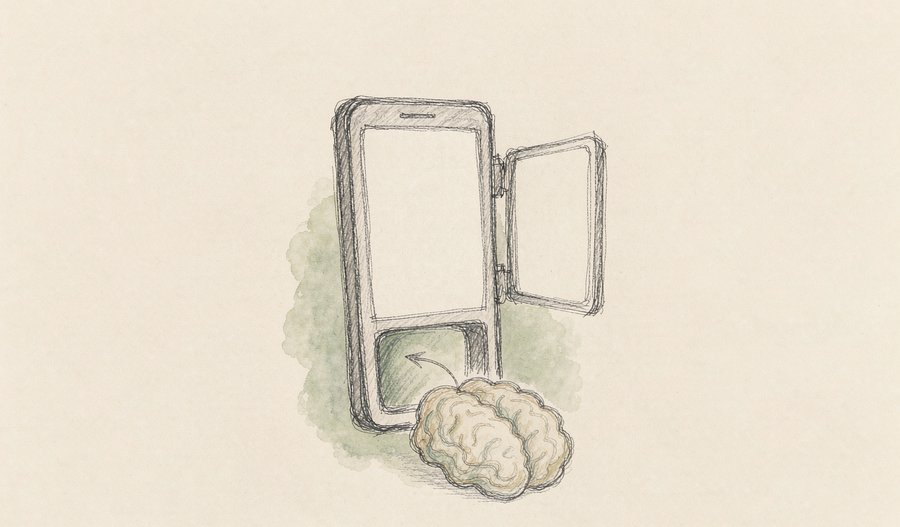
苹果向全线设备推送新的手机、平板与电脑操作系统，核心变化是用大语言模型重写了系统助手，支持跨应用协同与个人历史上下文理解。系统代码还显示出一套「模型委托」机制，允许第三方模型在用户授权后接管或扩展助手的部分能力。
观此：系统助手从「查天气、设闹钟」升级为「替你跨应用办事」，手机的操作入口正在被重写。更值得注意的是模型委托——把助手的大脑变成可替换的插槽，这可能重塑终端厂商与模型公司之间的分工方式。
02
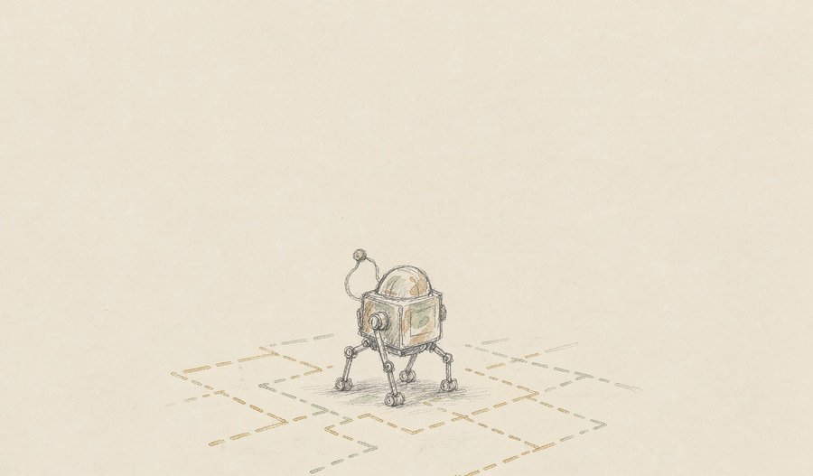
一研究团队发布类脑隐空间预测世界模型 Cog-WM 1.0，借鉴人脑的认知地图与时空记忆机制，使机器人在不预先建图、也不依赖海量适配数据的前提下，于陌生物理环境中完成自主导航与灵巧操作。
观此：机器人进不了普通家庭和工厂，很大原因不在硬件，而在于每换一个场景就要重新建图、重新调参。把认知地图内置进模型，等于让机器带着常识出门。这条路若走通，部署成本会从工程问题变成软件问题。
03
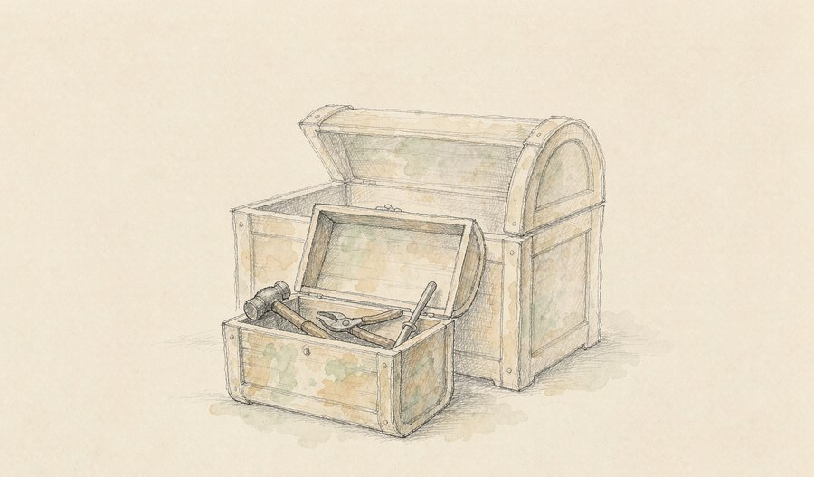
研究人员基于开放权重的中等规模基础模型，进一步微调出智能体模型 Occamy-1.0 并开源全部权重。该模型针对信息搜集、工具调用与代码编写等多步骤协同流程做了优化，以较小的参数量在四项基准测试中取得高性价比表现。
观此：巨头在比谁的模型最强，开源社区在比谁「够用」得更省。两条路线并不矛盾——真正被大规模调用的智能体，往往不需要最聪明的大脑，而需要稳定、便宜、可私有化部署。这是开源最有说服力的地方。
04
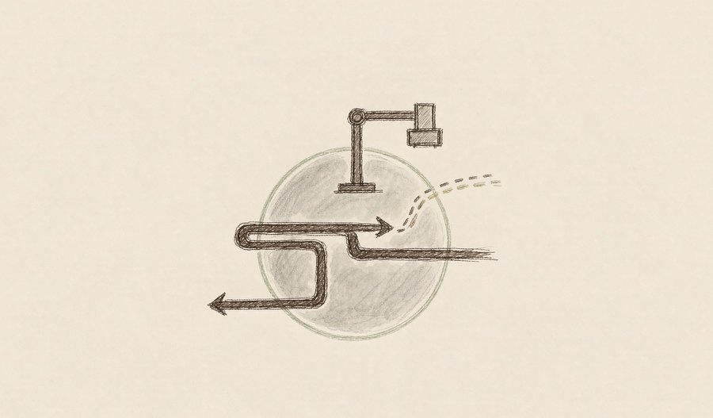
由于头部代工厂的2纳米产能大多已被预定、3纳米订单排满，一家手机芯片厂商正与另一家晶圆厂就下一代旗舰芯片的2纳米代工展开深入磋商，可能把部分标准版芯片交由其制造，以分散供应链过度集中的风险。
观此：先进制程的产能正在成为比技术本身更硬的约束。芯片厂选择「分单」，说明对单一供应商的依赖已经成为风险敞口。代工格局一旦松动，会沿着芯片、终端一路传导到消费者的换机节奏。
05
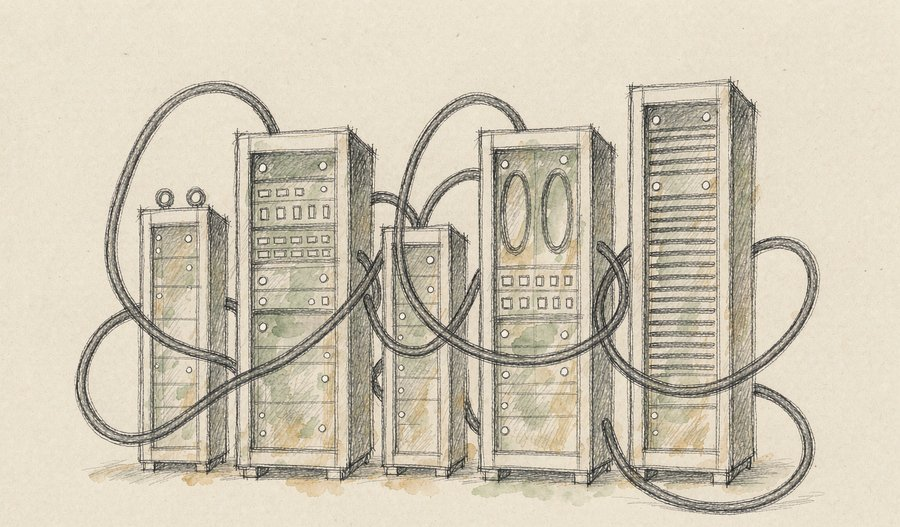
全国一体化算力统筹监测平台落地，十七个国家算力互联互通节点投入使用，国内智能算力总规模达到 2185 EFLOPS、同比增长 177%。同期，一款 5 纳米开源指令集芯片实现原生运行 270 亿参数大模型，无需外接独立显卡。
观此：算力竞争正从单点峰值转向全网调度——把分散各处的机房连成一张可调度的网，比再建一座超大集群更考验工程能力。端侧芯片能原生跑动两百多亿参数模型，则意味着推理正在离开云端，向用户手边迁移。
来源：AI行业前沿日报
06
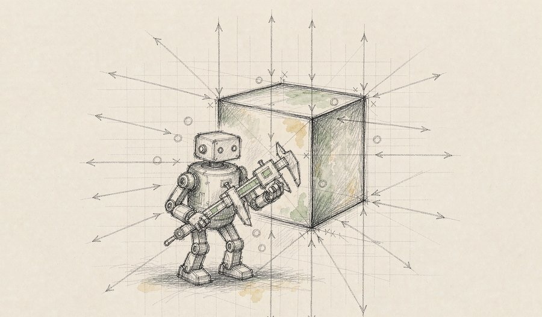
一个研究机构开源了面向物理世界的通用多模态大模型，参数量约 90 亿，支持单图、多图、长序列视频与任意分辨率视觉输入，聚焦真实物理场景下的空间感知、跨视角变换与具身任务规划，在九项国际空间理解基准中拿下八个组别第一。
观此：参数只有 90 亿，空间理解却超过许多更大模型，说明「看懂三维世界」并非只能靠堆参数。小型化加场景专精，正在成为具身智能落地的现实路径——毕竟机器人身上装不下数据中心。
来源：AI算力大事追踪
07
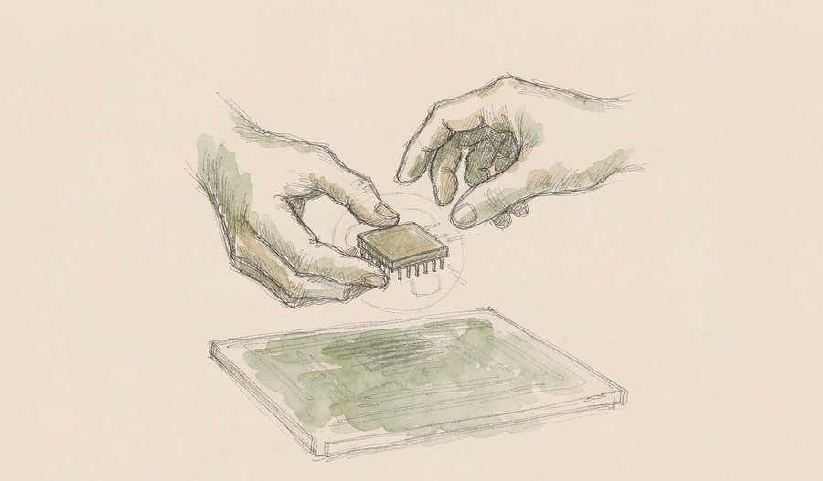
一家大型互联网公司与芯片设计商、代工厂合作自研的人工智能芯片于本月进入量产，主要服务于社交平台的推荐系统与生成式推理，目标是降低对外部芯片供应商的依赖。
观此：从买芯片到自己设计芯片，大平台的动作说明一件事：当推理量足够大，自研就成了成本结构的必然选择。芯片设计正在从少数半导体公司的专业，变成平台公司的日常。
来源：AI行业前沿日报
08
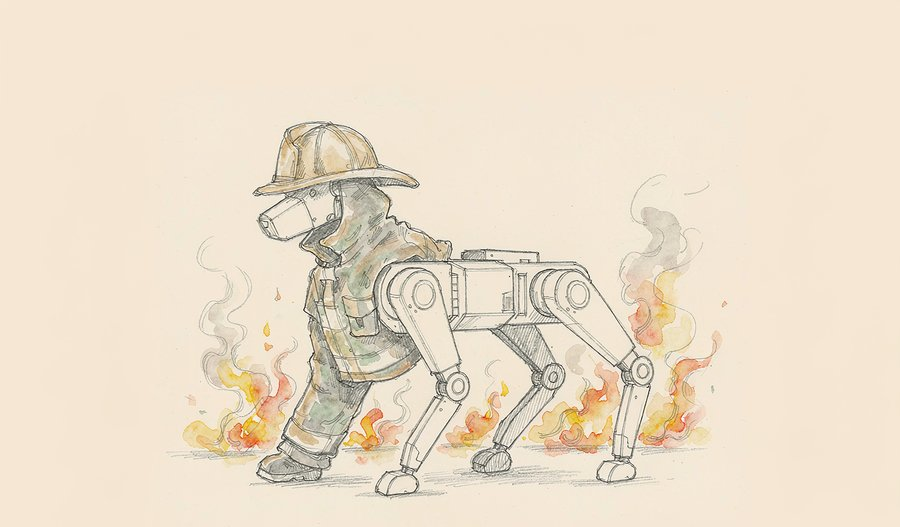
国产消防机器装备完成首次实战演练。这台四足机器人穿着耐高温防护服，可在 500℃ 环境中持续作业约两分钟，能深入火场执行火源定位、有害气体检测与被困人员搜索等任务。
观此：机器狗进火场，比进客厅更有说服力。高温、浓烟、结构坍塌，这些人类救援者最难承受的工况，恰好是机器的强项。应急场景很可能是具身智能最先产生公共价值的领域。
来源：云媒联报
09
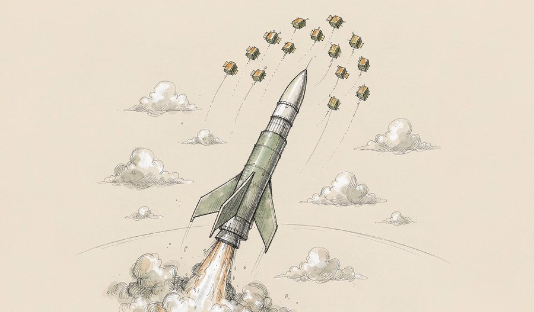
一枚民营中型液体火箭在东风商业航天创新试验区升空，将十颗低轨宽带卫星送入约 900 公里轨道。这是该型号火箭首次执行规模化卫星互联网星座组网任务，也是国内民营商业航天企业首次承担此类任务，该星座已累计发射两百余颗卫星。
观此：从一箭一星到一箭十星，再到星座批量组网，考验的不再是单次发射的成败，而是多星适配、星箭协同与批量部署的流水线能力。商业航天的分水岭恰在这里——能重复地做成，比能惊艳地做成更重要。
来源：界面新闻
10
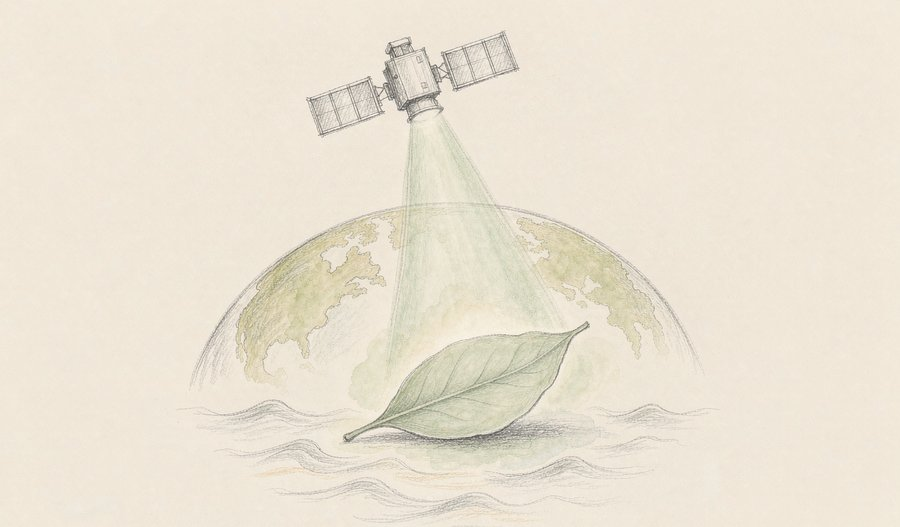
欧洲一枚轻型运载火箭从法属圭亚那航天中心升空，把两颗对地观测卫星送入太阳同步轨道。其中一颗专门探测植物光合作用时发出的微弱荧光，用于评估热浪与干旱对植被的胁迫程度；另一颗继续系统测量海洋温度、浪高与海流，并观测土地利用变化。
观此：一颗卫星测植物的「呼吸」，一颗卫星量海洋的「脉搏」。气候研究正从统计历史走向实时观测——人类第一次有机会在全球尺度上，看到高温与缺水如何在叶片上留下痕迹。这类数据的价值，往往在几年后才会被充分认识。
11
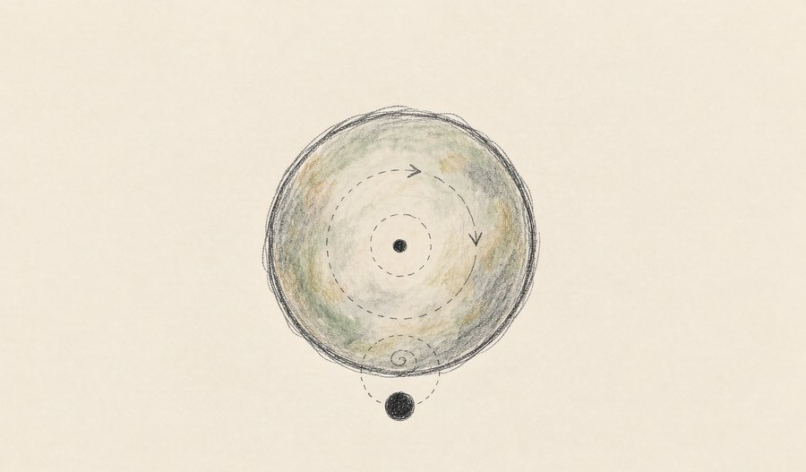
一项发表于天体物理学期刊的研究提出新解释：金星可能曾经拥有卫星，但由于其自转极慢——一个金星日约相当于 243 个地球日——任何卫星都会在潮汐作用下逐渐螺旋靠近，最终坠入行星。研究者用引力模型模拟了不同大小的假想卫星，得出一致结局。这一事件可能发生在金星诞生后的头十亿年内。
观此：地球的月亮正以每年约 4 厘米的速度远离我们，金星的「月亮」却走向相反结局——决定命运的是行星转得够不够快。这个假说也提醒人们，太阳系今日的样貌，是无数次缓慢消耗与偶然相撞叠加的结果。
12
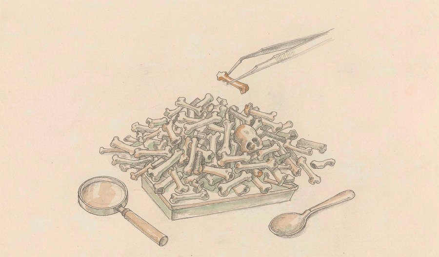
中国科研团队联合地方文物考古机构，从云南鹤庆蝙蝠洞遗址的六万余件碎骨中筛选出古人类化石，连同两颗出土牙齿共五个样本，确认为距今约 16.7 万至 13.4 万年前的丹尼索瓦人。相关成果以两篇论文同日发表在国际学术期刊《自然》上，其中包括目前发现的第一件丹尼索瓦人桡骨化石。
观此：丹尼索瓦人此前已知的化石几乎都指向西伯利亚，中国西南长期是空白。这次不仅把已知分布延伸到云贵高原，还拿到了关键的头后骨骼证据。填补空白的方式同样值得留意——先靠形态学预筛把范围缩小到二十余块，再用古蛋白质组学确认身份。
来源：人民日报海外版
13
一项发表在《自然-通讯》的研究追踪了女性在三个激素剧烈变动阶段的脑部影像，发现灰质体积的变化速率与模式各不相同，其中妊娠期的变化最为显著。研究者同时指出，更年期状态依赖自我报告、缺乏全队列的直接激素检测数据，是本次研究的局限。
观此：把女性生命历程中的三个关键阶段放进同一张图表比较，本身就说明研究方法在变化——过去不少脑科学研究把男性脑当作默认模板。这类分阶段的观察，可能让一些长期难以解释的健康现象找到生物学线索。
来源：腾讯新闻
14
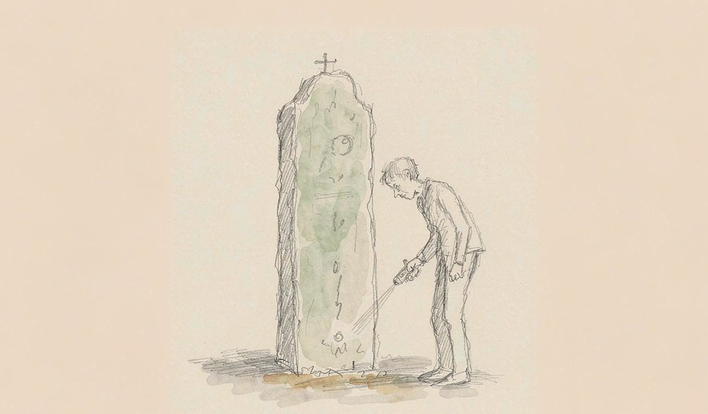
研究团队针对赤壁摩崖石刻群中因长期风化、刻痕浅淡而难以辨识的一处石刻，构建了「感知—识别—验证」的跨学科流程：先用便携设备做三维采集与两阶段图像增强，在图像识别仍不稳定时引入人工智能辅助筛选作者与文献线索，最后结合字形特征、诗律、地方志与正史交叉验证，确认其为明代弘治八年地方官员所题七律。
观此：人工智能在这里干的不是替代学者，而是把「看不清」变成「看得见」。文物释读最怕孤证，这套流程的价值在于每一环都可复核。技术与文献互证，正在成为文化遗产研究的新常规。
来源：武汉大学历史学院
15
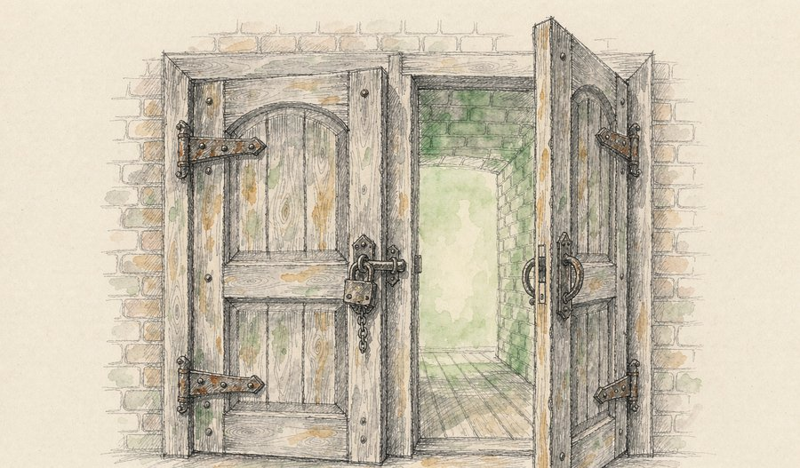
一家生物技术公司公布其天使综合征三期临床结果，主要终点与关键次要终点均未达标，公司表示将重新评估后续开发路径。同日，美国监管机构把一款针对特定基因突变肺癌的靶向药适应症从后线前移至一线治疗，该药此前已获批用于经治患者。
观此：罕见病领域同一天里既有失败也有前行。天使综合征的三期失利提醒人们：早期数据好看，不等于大样本验证会成功，这也是罕见病药物开发最难跨过的一道坎。而肺癌靶向药前移至一线，是分子诊断把「罕见亚型」变成可精准干预目标的又一例证。
来源：CheckRare
16
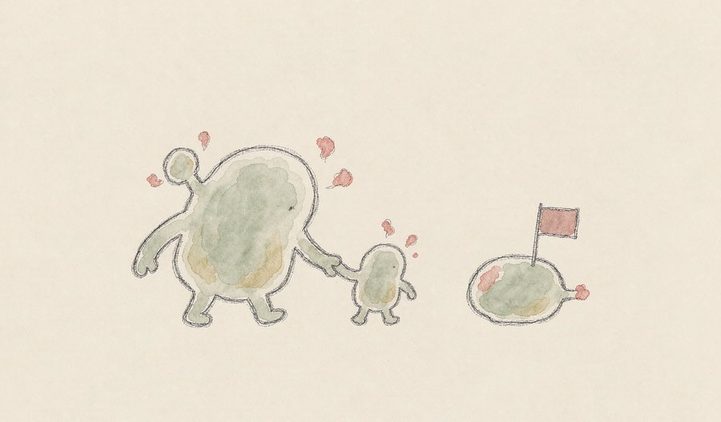
一家跨国药企宣布与国内生物技术公司达成协议，收购一款在研的三特异性T细胞衔接器，计划开发用于多发性骨髓瘤治疗。该分子可同时靶向T细胞与两种肿瘤抗原。同日另有国内企业宣布，其面向晚期实体瘤的肿瘤浸润淋巴细胞疗法获美国监管机构新药临床试验许可。
观此：三特异性抗体与细胞疗法，一个把免疫细胞「牵」到肿瘤跟前，一个把免疫细胞「训」好再送回体内。两条技术路线同时推进，说明肿瘤免疫治疗正从单点突破进入组合探索阶段，真正决定成败的将是长期安全性与可及性。
来源：美迪西药闻速览
17
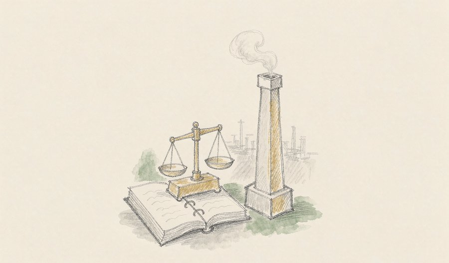
《全国碳市场发展报告（2026）》在武汉发布。报告显示，全国碳排放权交易市场启动五年来，已纳入发电、钢铁、水泥、铝冶炼四个行业共 3680 家重点排放单位，覆盖二氧化碳排放量约 83 亿吨，占全国排放总量的 65% 以上；火电行业通过碳市场实现的累计减排量达 5.3 亿吨，石化、化工、造纸、民航等行业的纳入前期准备工作已经启动。
观此：碳市场的意义在于把「排碳有成本、减碳有收益」变成企业每天要算的账。覆盖行业从电力扩展到钢铁、水泥与铝冶炼，等于把减排压力传导到工业体系的主干。下一步的关键，是把更多行业与更多温室气体种类纳入同一套可核算的规则。
来源：央视网
18
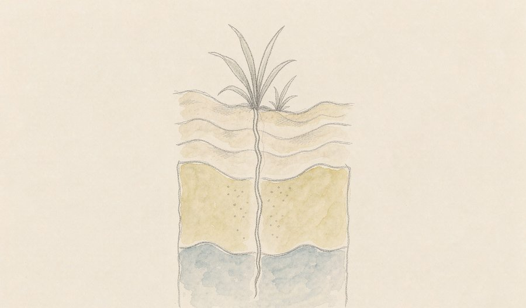
新疆地质部门实施的南疆沙漠找水项目取得新突破，在塔克拉玛干沙漠南缘的民丰县安迪尔乡以及沙漠腹地的麻扎塔格山南区域，新发现两处大型地下水水源，打破了当地地下只有死水与咸水的传统认知。
观此：在年降水量极少的区域找到可用地下水，价值不只在水量，更在于它改写了水文地质的判断模型。这类发现对干旱区的生态修复、植被恢复与基础设施选址，都有直接的参考意义。
来源：大众日报
19
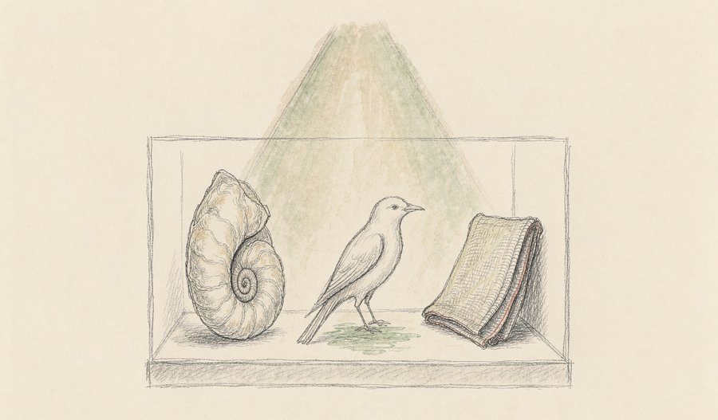
一个以黄河流域与海河流域为主题的自然生态展在国家自然博物馆开展，展出两条流域的古生物化石、现生动植物标本与非遗文化展品共 55 件套，分「时光序曲」「万物和鸣」「幸福长河」三个单元，呈现流域的自然演进、生态变迁与治理成果，展期持续至十二月中旬。
观此：用化石讲地质，用标本讲生态，用非遗讲人——把一条河的自然史与文明史放进同一个展厅，是最容易被公众接受的科学叙述方式。博物馆的策展逻辑，正从「展示珍稀」转向「解释关系」。
来源：央视网才艺频道
20
攀岩世界杯贵阳站收官日决出男、女速度接力两枚金牌。中国队在先后追平并打破男子速度接力世界纪录后包揽当晚金牌，本站比赛以三金三银一铜收官。
观此：速度攀岩是极少数以秒为单位、胜负肉眼可判的竞技项目，也因此最容易产生「纪录时刻」。接力则把个体极限变成团队课题——交接的稳定性，往往比个人的绝对速度更能决定结果。
来源：澎湃新闻
今天的版面有一个共同的底色：能跑起来的技术，比更聪明的技术更受关注。
在人工智能一侧，开放权重的小模型、能自己调工具与写代码的智能体、把认知地图内置的世界模型、把算力从单点连成网的调度体系——它们都不追求「最强」，追求的是「可用」。这背后是一个现实判断：技术如果要变成日常，稳定性与成本会取代分数成为主要指标。这也解释了为什么具身智能的进展总出现在具体场景里：会认路的机器人、能进火场的机器狼、能在本地完成推理的开源芯片，公众由此感受到技术正在靠近生活。
在天上与地下两侧，同样能看到「批量化」与「可复制」两条线索合流。民营火箭第一次接下星座组网的活，衡量标准从单次成功转向持续交付；云南洞穴的化石发现之所以重要，一半是填补了地理空白，另一半是筛选方法本身可以被别人重做一遍。航天与考古，一个向外拓展，一个向内追寻，共同点是把偶然的发现变成可重复的流程。
最后值得记住的是两条与普通人关系更近的消息：碳市场把钢铁、水泥与铝冶炼纳入核算体系，意味着环境治理正变成企业账本上的一行数字；而三十余支中外赛艇队伍将在国庆期间同江竞渡、国家自然博物馆把两条大河的化石与非遗摆进同一个展厅，则说明公共文化供给正在变得更有层次。真正塑造日常的，往往就是这样一些安静而持续的改变。
内容仅供资讯参考。
本文插画由 AI 辅助绘制。